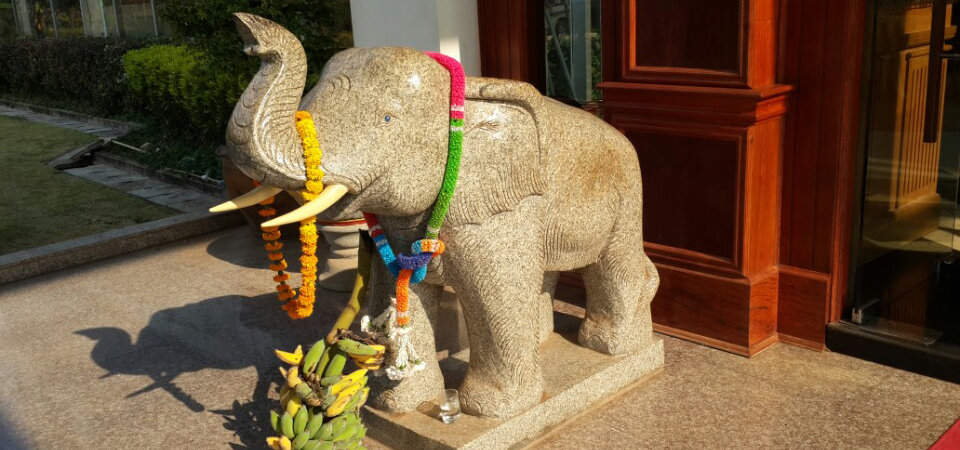
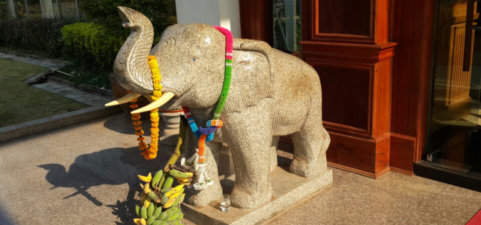
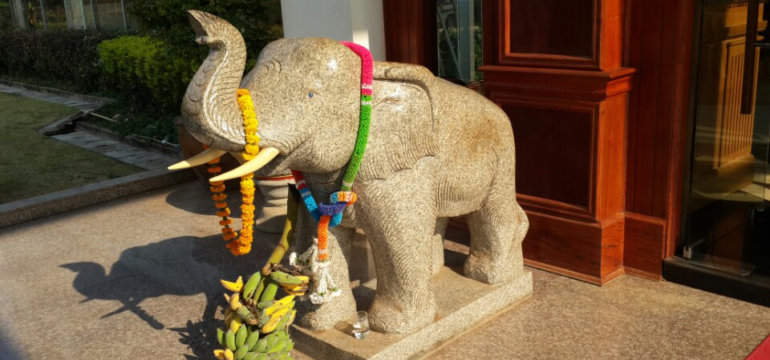
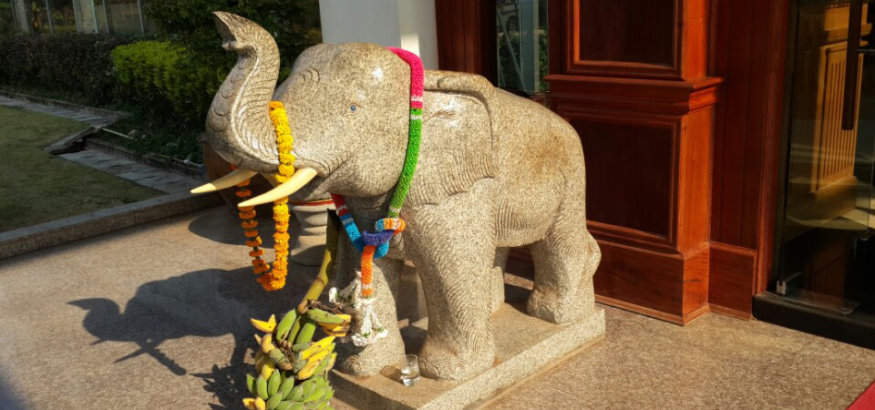

네모 커피는 2010년, 라오스 커피의 매력을 알리고 싶다는 열정으로 시작하였습니다. 양질의 커피를 유통하기 위해, 라오스 볼라벤 고원의 커피 농장에서의 커피 재배부터 시작하여 한국에서의 가공과정까지 마음을 다해 관리하고 있습니다. 매장에 오셔서, 부담없이 라오스 커피를 즐겨보세요.
매장 위치 : 고양시 덕양구 토당동 호수로 91 (토당동 671-16)
전화 : 031-978-3081
모바일 : 010-8081-7000
이메일 : laos0908@hanmail.net